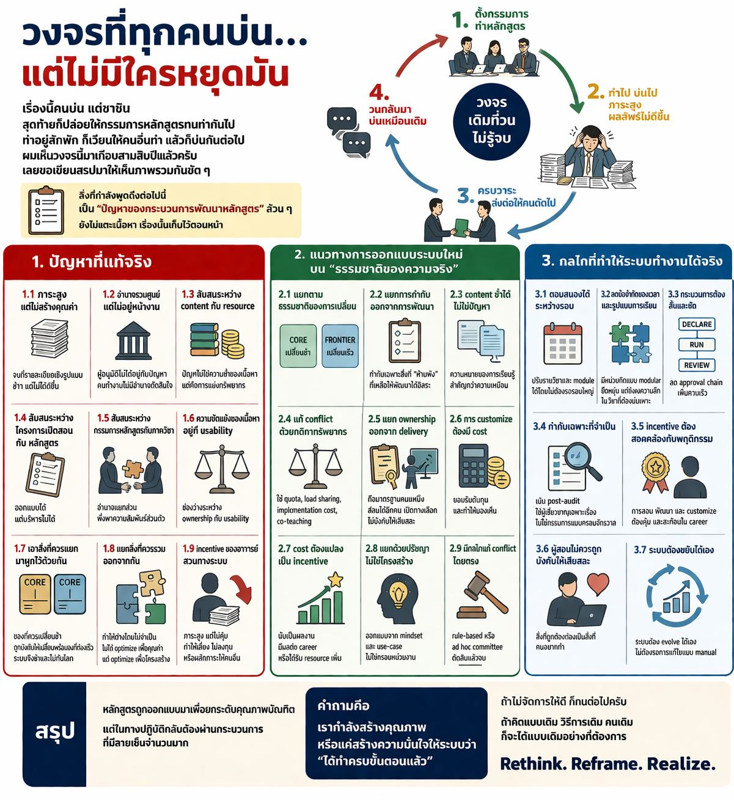

การปฏิรูปหลักสูตรต้องเริ่มจากการออกแบบระบบ ไม่ใช่เพิ่มขั้นตอน
{kind=link}

ปัญหาของหลักสูตรในมหาวิทยาลัยมักถูกอธิบายผ่านตัวเนื้อหาวิชา แต่ในความเป็นจริง สิ่งที่สร้างภาระและทำให้ระบบไม่ตอบโจทย์มากที่สุด คือกระบวนการพัฒนาหลักสูตรเอง ซึ่งใช้แรงงานสูง เคลื่อนตัวช้า และให้ความสำคัญกับความครบถ้วนของขั้นตอนมากกว่าคุณภาพของผลลัพธ์การเรียนรู้
จุดอ่อนสำคัญประการแรกคือภาระจำนวนมากกลับไม่สร้างคุณค่าเชิงระบบ การพิจารณาหลักสูตรจำนวนไม่น้อย ลงเอยที่การตรวจรูปแบบหรือถ้อยคำ มากกว่าการถามว่าผู้เรียนจะได้อะไรและระบบจะรองรับการเรียนรู้นั้นได้จริงหรือไม่ ในเวลาเดียวกัน อำนาจการอนุมัติกระจุกอยู่ส่วนกลาง ขณะที่ภาระการทำงานและผลกระทบจริงตกอยู่กับหน่วยงานหน้างาน ทำให้ผู้ใช้ผลลัพธ์ไม่มีอำนาจกำหนด และผู้มีอำนาจไม่ได้เผชิญปัญหาจริงของการดำเนินการ
อีกประเด็นหนึ่งคือระบบมักสับสนระหว่างปัญหาเรื่องเนื้อหากับปัญหาเรื่องทรัพยากร ความซ้ำของเนื้อหาไม่ใช่ปัญหาเสมอไป หากผู้เรียนคนละกลุ่มและไม่ได้แย่งทรัพยากรเดียวกัน สิ่งที่ควรจัดการจริงคือการจัดสรรภาระสอน คน และทรัพยากรที่ทับซ้อนกัน มากกว่าจะพยายามลดความซ้ำเชิง content แบบเหมารวม นอกจากนี้ ระบบยังสับสนระหว่าง หลักสูตร กับ โครงการเปิดสอน และระหว่างกรรมการหลักสูตรกับภาควิชา จนเกิดสภาพอำนาจแยกส่วน ที่ทำให้การบริหารต้องพึ่งความสัมพันธ์ส่วนตัวมากกว่ากลไกที่ออกแบบไว้
เมื่อปัญหาไม่ได้อยู่ที่วิชา แต่อยู่ที่สถาปัตยกรรมของระบบ
หากจะออกแบบระบบใหม่ ต้องเริ่มจากการยอมรับธรรมชาติของความจริงว่าองค์ประกอบของหลักสูตรไม่ได้เปลี่ยนเร็วเท่ากัน ส่วนที่เป็นพื้นฐานควรมีรอบปรับที่ยาวและมั่นคง ขณะที่ส่วน frontier ควรปรับได้บ่อยกว่าและมีกลไกกำกับอีกแบบหนึ่ง การกำกับจึงควรโฟกัสเฉพาะสิ่งที่ ห้ามพัง เช่น outcome หรือมาตรฐานขั้นต่ำ ส่วนที่เหลือต้องเปิดพื้นที่ให้หน่วยงานพัฒนาได้คล่องตัว โดยไม่ต้องลากทุกเรื่องเข้าสู่ approval chain เดียวกัน
ระบบใหม่ต้องทำให้การปรับตัวเป็นเรื่องปกติ ไม่ใช่ภาระพิเศษ
ในเชิงปฏิบัติ ระบบควรแยก ownership ออกจาก delivery ให้ผู้ที่ถือมาตรฐานไม่จำเป็นต้องเป็นผู้สอนทุกครั้ง และเปิดทางเลือกให้การ customize ตามบริบทของผู้เรียนเกิดขึ้นได้จริง แต่ต้นทุนของการปรับต้องถูกมองเห็น และถูกแปลงเป็น incentive ที่มีผลต่อ career, workload หรือทรัพยากร มิฉะนั้นการพัฒนาวิชาจะยังคงเป็น moral burden ที่พึ่งความเสียสละของอาจารย์แต่ละคน
จาก approval chain ไปสู่กลไกที่ขยับได้เอง
กลไกของระบบใหม่จึงควรขยับจาก pre-approval ที่ยาวและรวมศูนย์ ไปสู่กระบวนการที่สั้นและชัดกว่าเดิม คือ Declare → Run → Review ปรับรายวิชาและ module ได้ระหว่างรอบ ใช้ post-audit มากกว่า pre-approval และมีกลไกแก้ conflict เรื่องทรัพยากรหรือการทับซ้อนโดยตรง ไม่โยนทุกเรื่องกลับไปให้กรรมการใหญ่ตัดสินเหมือนเดิม
คำถามสุดท้ายคือเราต้องการคุณภาพจริง หรือแค่ความครบขั้นตอน
คำถามสำคัญจึงไม่ใช่เพียงว่าเรามีหลักสูตรใหม่กี่ฉบับ แต่คือเรากำลังสร้างคุณภาพของบัณฑิตจริง หรือเพียงสร้างความมั่นใจให้ระบบว่าได้ทำครบทุกขั้นตอนแล้ว หากยังคิดแบบเดิม ใช้วิธีเดิม และพึ่งคนเดิม ผลลัพธ์ที่ได้ก็จะยังเป็นแบบเดิม ระบบที่ดีต้องไม่อาศัยความทน แต่ต้องทำให้สิ่งที่ถูกต้องกลายเป็นสิ่งที่คนอยากทำและทำได้จริง